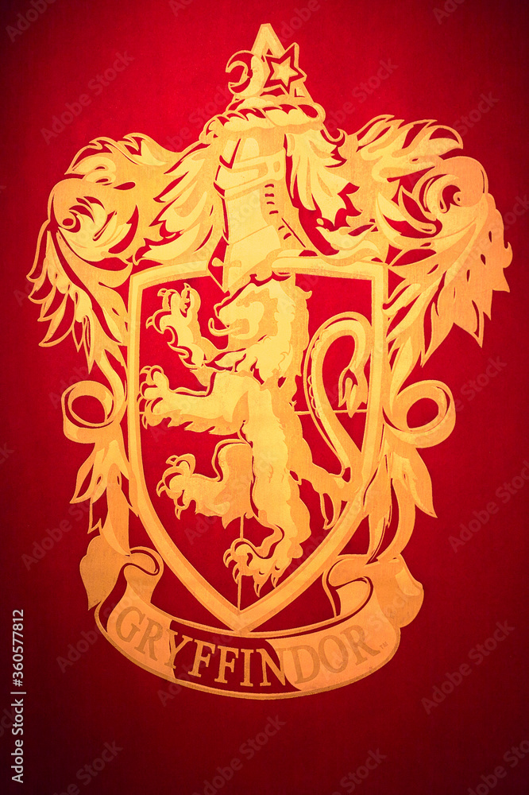

La Casa de Gryffindor valora el coraje por encima de todo, pero también la osadía, el temple, la lealtad y la caballerosidad. Sus estudiantes son valientes, pero también muy imprudentes.
Gryffindor
-Hay que tener coraje para oponerse a nuestros enemigos, pero hace falta el mismo valor para respaldar a los amigos
-Albus Dumbledore

Godric Gryffindor
Fue un mago de sangre pura, nacido en un día de junio, en el Valle de Godric hace más o menos mil años. Él y su familia vivieron en África por algún tiempo, lejos de la cacería de brujas en Inglaterra. Esto hizo que Godric descubriera la vida salvaje de África, la cual le comenzaba a agradar. Disfrutaba especialmente observando a los leones. Godric era aventurero, por eso no era difícil saber que se metió en líos. Sin embargo, él era tan noble que sus padres casi no lo tenían que retar. Godric aprendió todo lo que sabía de magia por medio de su padre, quien solía ser profesor, y quien siempre pensó que tendría que haber una escuela de magia para los niños con habilidades mágicas. Cuando Godric tenía 18 años volvió a Inglaterra él solo. Fue a vivir a Hogsmeade, pues había oído que estaba cerca de un Bosque Prohibido. Conoció allí a un joven mago, Salazar Slytherin, que se convirtió en su amigo. Godric encontró en Salazar el mismo espíritu aventurero que él tenía. Godric tenía el sueño de crear una gran escuela de magia con Salazar, como su padre, quien aceptó. Para entonces ambos tenían al menos 30 años, mantenían su amistad y comenzaban a ser magos famosos, con grandes poderes. Fue maestro de pociones y de defensa contra las artes oscuras. Salazar Slytherin estuvo en contacto con Helga Hufflepuff, otra gran bruja de la época, quien comenzó a ayudar a construir Hogwarts. Más tarde, Godric Gryffindor conoce a Rowena Ravenclaw que compartió la sabiduría más allá de sus años con los otros profesores de Hogwarts. Godric comenzó a distanciarse de Salazar, y comenzó a hacer más demandas para la escuela. Salazar comenzó a enojarse con Hogwarts, Godric y con los magos nacidos de muggles, por lo que finalmente dejó la escuela, y finalizó su amistad con Godric, dando paso a la enemistad. Pero Godric siempre mantuvo su cabeza y nobleza bien altos. Hoy, él representa la más respetada de las cuatro casas de Hogwarts. Godric siempre fue valiente y noble, y el león simboliza la casa de Gryffindor.
Curiosidades
Sala común
Santo y seña conocidos:Fortuna major, Caput draconis, Somormujo, Mimbulos mimbletonia, Baratija, Vil bellaco.
Descripcion:La sala común de Gryffindor está localizada en la Torre de Gryffindor, la entrada está
localizada en el séptimo piso y está custodiada por el retrato de la Dama Gorda, que utiliza un vestido rosa.
Ella permite la entrada solamente si la clave es la correcta (cambia regularmente). Tras ella se encuentra una
gran sala llena de grandes armarios, mesas, y un pizarrón donde los estudiantes encuentran noticias, anuncios,
avisos de pérdida, etc. Una ventana mira hacia afuera, a los terrenos del castillo, y una gran chimenea domina
la pared. Es muy reconfortante y los estudiantes de Gryffindor se reúnen para estudiar, celebrar o relajarse.
Espada de Gryffindor
La espada de Gryffindor fue fabricada hace mil años por los duendes, los trabajadores metalúrgicos más
hábiles
del mundo mágico, y por lo tanto está encantada. Hecho de plata pura, está incrustado con rubíes, la piedra
que
representa a Gryffindor en los relojes de arena que cuentan los puntos de la casa en Hogwarts. El nombre de
Godric Gryffindor está grabado justo debajo de la empuñadura.
La espada fue utilizada para destruir varios horrocruxes y es el unico objeto propio de los fundadores
que no fue uno.

Magos famosos
- Familia Potter
- Familia Weasley
- Sirius Black
- Hermione Granger
- Peter Pettigrew (mortífago)
- Familia Longbottom
- Albus Dumbledore
- Minerva McGonagall
- Remus Lupin
- Rubeus Hagrid

Sir Nicholas "Casi decapitado", fantasma de la casa de Gryffindor.